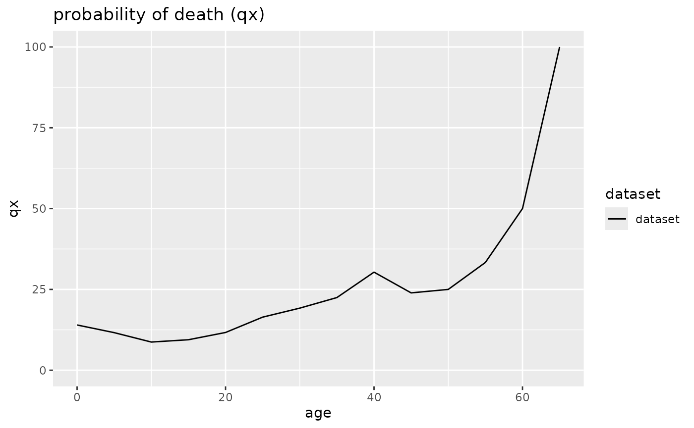
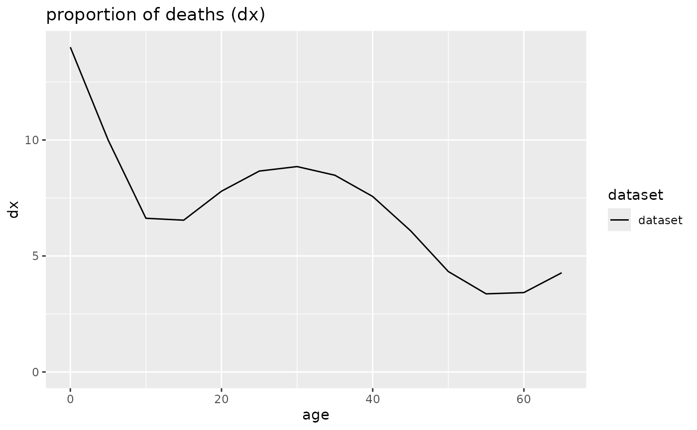
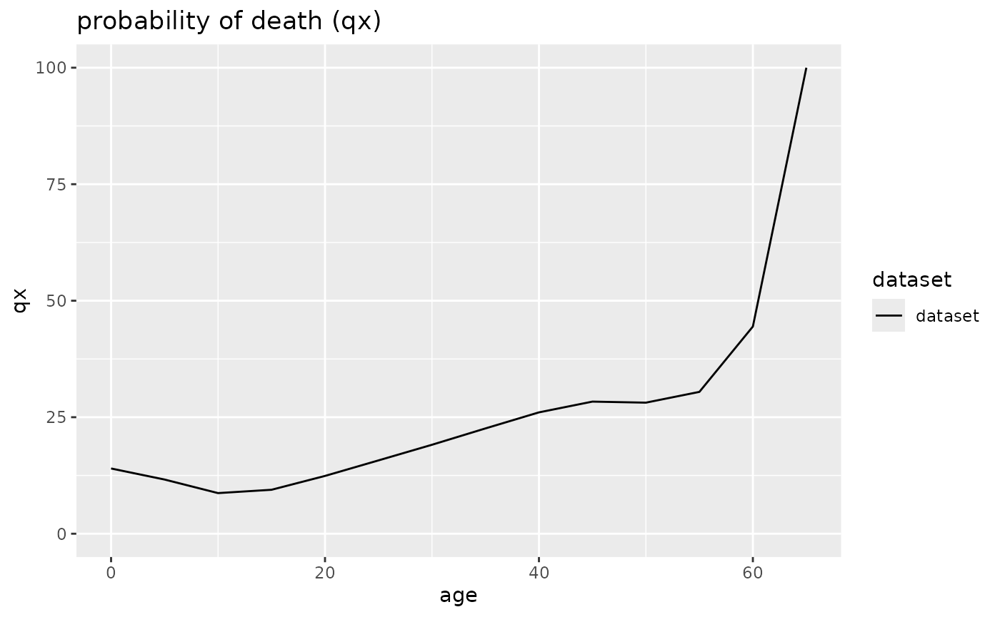
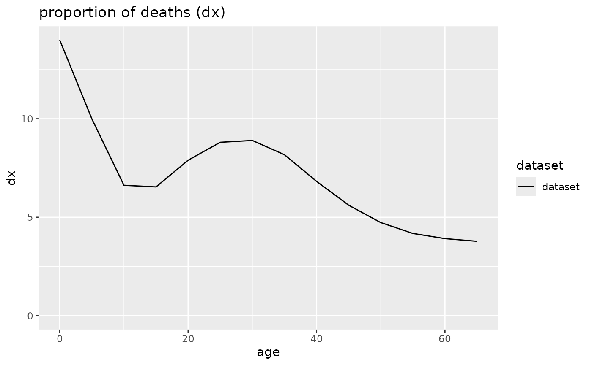
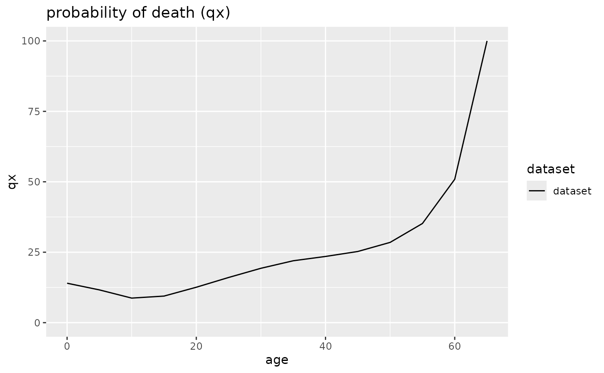

Smoothing of data
Due to the nature of most anthropological ageing methods, life tables
from archaeological series often contain artificial jumps in the data.
To counteract this effect, mortAAR provides the option to interpolate
values for adults by a monotonic cubic spline. Usual options will by
‘10’, ‘15’ or ‘20’ which will interpolate the values for individuals of
an age of 20 or older by 10-, 15- or 20-year cumulated values. This is
to be used carefully, as diagnostic features of the life table might be
smoothed and essentially removed. This option is only available when the
methods Standard or Equal5 in
prep.life.table have been chosen.
As an example, we work with the Early Neolithic cemetery of Nitra. First, we prepare the data, calculate the life table and plot dx- and qx-diagrams. The age-classes 25-44 show a bimodal distribution which might be artificial. Furthermore, the curve sharply drops after 40 which also looks very unnatural.
nitra_prep <- prep.life.table(nitra, method="Equal5", agebeg = "age_start", ageend = "age_end")
nitra_life <- life.table(nitra_prep)
plot(nitra_life, display=c("dx","qx"))
Next we test how the plot changes if the spline-option with 10 and 20 years is chosen. In both cases, the smoothing is only applied to the age groups 20 and above.
nitra_life <- life.table(nitra_prep,option_spline = 10)
plot(nitra_life, display=c("dx","qx"))
nitra_life <- life.table(nitra_prep,option_spline = 20)
plot(nitra_life, display=c("dx","qx"))
As expected, applying the option leads to much smoother curves. However, for the 10-year-option, the oldest age group shows a local maximum which is not reflected in the original data and therefore is an artefact of the smoothing algorithm working on the available data. In this case, the 20-year-option seems to offer a better compromise between a much more natural looking curve and still trueness to the original data.
Representativeness of data
Anthropological data from archaeological contexts is necessarily fragmentary. The question remains if this fragmentation leads to completely unreliable inferences when statistical methods are applied to it. K. M. Weiss (1973, 46f.) and C. Masset and J.-P. Bocquet-Appel (1977; see also Herrmann et al. 1990, 306f.) have therefore devised indices which check if the non-adult age groups are represented in proportions as can be expected from modern comparable data. Whether this is really applicable to archaeological data-sets is a matter of debate.
Weiss chose the mortality (qx) as deciding factor and claimed that (1) the probability of death of the age group 10-15 (5q10) should be lower than that of the group 15-20 (5q15) and that (2) the latter in turn should be lower than that of age group 0-5 (5q0).
In contrast, Bocquet-Appel and Masset took the raw number of dead (Dx) and asserted that (1) the ratio of those having died between 5 and 10 (D5-10) and those died between 10 and 15 years (D10-15) should be equal or larger than 2 and that (2) the ratio of those having died between 5 and 15 (D5-15) and all adults (>= 20; D20+) should be 0.1 or larger.
If either of these prerequisites is not met, the results from such data should be treated with extreme caution as the mortality structure is different from that of known populations. Due to the specific nature of the indices, they only give meaningful results if 5-year-age categories have been chosen for the non-adults.
Quite recently, B. Taylor and M. Oxenham (2024) added a comparison of Total fertility rates (TRF) according to different formulas which depend either on subadults or adults. The formualas Taylor and Oxenham used either weigh all individuals aged 0–14 against all individuals or all individuals aged 15–49 against all individuals aged 15+. The formulas differ from the original ones published by C. McFadden and M. Oxenham (2018) and B. Taylor et al. (2023) because the data basis is slighty different. If the results of the formulas deviate by more than 0.692 (the standard error of estimate, SEE), they conclude that there is a problem with the age structure. In contrast to the tests by Weiss and Masset and Bocquet-Appel, there is no need to divide the sample into 5-year-steps, as long as the limits at 15 and 50 years are respected.
As example, we use the data-set of the medieval cemetery of Schleswig.
schleswig <- life.table(schleswig_ma[c("a", "Dx")])
lt.representativity(schleswig)## approach condition value1 value2 result outcome
## 1 weiss_i1 5q0 > 5q15 20.24 4.91 4.12 TRUE
## 2 weiss_i2 5q10 < 5q15 6.86 4.91 1.40 FALSE
## 3 child_i (5D5 / 5D10) >= 2 22.00 12.00 1.83 FALSE
## 4 juvenile_i (10D5 / D20+) >= 0.1 34.00 155.00 0.22 TRUE
## 5 TFR TFR_SA = TFR_A 4.83 6.99 2.16 FALSEThe result is a dataframe where the individual conditions with the
actual results are listed. The last column provides the verdict if the
respective condition is met or not. In the case of the Schleswig
cemetery, only the Weiss criterium (1) and the Bocquet-Appel/Masset
criterium (2) is TRUE, the other three are
FALSE. Therefore, it can be argued that the Schleswig data
is not representative of a complete once-living population. However, it
might be that the Bocquet-Appel/Masset criterium (1) is too conservative
as only two individuals would have to have died at this age to bring the
ratio above 2 (Herrmann et al. 1990, 307).
P. Sellier (1989, 23) has even argued that
the ratio should be 1.5 instead of 2. In this case, both criteria of
Bocquet-Appel and Masset would be met for the Schleswig cemetery.
Correction of life table data after Bocquet-Appel and Masset
It is generally assumed that most skeletal populations lack the
youngest age group. Life tables resulting from such populations will
necessarily be misleading as they lead to believe that the mortality of
younger children was lower than it actually was and that life expectancy
was higher. For correcting these missing individuals, Masset and
Bocquet-Appel (1977; see also Herrmann et al.
1990, 307) conceived of several calculations based on regression
analyses of modern comparable mortality data. Despite the fact that
these recommendations are more than 40 years old, they still surface in
text books (e. g. Grupe, Harbeck, and McGlynn
2015, 418–19). However, the applicability of these indices to
archaeological data is debatable and does not necessarily lead to
reliable results. Therefore, the correction needs to be weighted
carefully and ideally only after the representativeness of the base data
has been checked with function lt.representativity.
The equations conceived by Masset and Bocquet-Appel are relatively complex. Life expectancy at the time of birth is computed as follows:
The equation will strive towards 75 years of life expectancy when there is a ratio of adults to 5–14-year old of 100 to 1 as the term will then tend towards 1. Higher numbers of non-adults will likewise lead to lower life expectancy values.
The probability of death in the first and the first five years is similarly constructed:
The corrected Schleswig data1 are as follows:
schleswig <- life.table(schleswig_ma[c("a", "Dx")])
lt.correction(schleswig)## $indices
## method value range_start range_end
## 1 e0 22.549 21.046 24.052
## 2 1q0 0.290 0.274 0.306
## 3 5q0 0.465 0.424 0.506
##
## $life_table_corr
##
## mortAAR life table (n = 368.1 individuals)
##
## Life expectancy at birth (e0): 21.129
##
## x a Ax Dx dx lx qx Lx Tx ex
## 1 0--4 5 1.667 171.102 46.482 100.000 46.482 345.059 2112.914 21.129
## 2 5--9 5 2.500 22.000 5.977 53.518 11.168 252.648 1767.854 33.033
## 3 10--14 5 2.500 12.000 3.260 47.541 6.857 229.556 1515.207 31.871
## 4 15--19 5 2.500 8.000 2.173 44.281 4.908 215.973 1285.650 29.034
## 5 20--26 7 3.500 15.000 4.075 42.108 9.677 280.493 1069.677 25.403
## 6 27--33 7 3.500 30.000 8.150 38.033 21.429 237.706 789.184 20.750
## 7 34--40 7 3.500 12.000 3.260 29.883 10.909 197.771 551.478 18.455
## 8 41--47 7 3.500 19.000 5.162 26.623 19.388 168.296 353.707 13.286
## 9 48--54 7 3.500 36.000 9.780 21.461 45.570 116.001 185.411 8.639
## 10 55--61 7 3.500 28.000 7.607 11.682 65.116 55.148 69.410 5.942
## 11 62--68 7 3.500 15.000 4.075 4.075 100.000 14.262 14.262 3.500
## rel_popx
## 1 16.331
## 2 11.957
## 3 10.864
## 4 10.222
## 5 13.275
## 6 11.250
## 7 9.360
## 8 7.965
## 9 5.490
## 10 2.610
## 11 0.675Apart from the corrected life table, it also lists – as separate data.frame – the indices (, and ) computed by the formulas of Masset and Bocquet-Appel. Compare this to the uncorrected values:
life.table(schleswig_ma[c("a", "Dx")])##
## mortAAR life table (n = 247 individuals)
##
## Life expectancy at birth (e0): 30.671
##
## x a Ax Dx dx lx qx Lx Tx ex rel_popx
## 1 0--4 5 1.667 50 20.243 100.000 20.243 432.524 3067.139 30.671 14.102
## 2 5--9 5 2.500 22 8.907 79.757 11.168 376.518 2634.615 33.033 12.276
## 3 10--14 5 2.500 12 4.858 70.850 6.857 342.105 2258.097 31.871 11.154
## 4 15--19 5 2.500 8 3.239 65.992 4.908 321.862 1915.992 29.034 10.494
## 5 20--26 7 3.500 15 6.073 62.753 9.677 418.016 1594.130 25.403 13.629
## 6 27--33 7 3.500 30 12.146 56.680 21.429 354.251 1176.113 20.750 11.550
## 7 34--40 7 3.500 12 4.858 44.534 10.909 294.737 821.862 18.455 9.610
## 8 41--47 7 3.500 19 7.692 39.676 19.388 250.810 527.126 13.286 8.177
## 9 48--54 7 3.500 36 14.575 31.984 45.570 172.874 276.316 8.639 5.636
## 10 55--61 7 3.500 28 11.336 17.409 65.116 82.186 103.441 5.942 2.680
## 11 62--68 7 3.500 15 6.073 6.073 100.000 21.255 21.255 3.500 0.693With the uncorrected data, the youngest age group (years 0–4) ‘only’ comprises around 20% of the population. However, according to the formulas by Masset and Bocquet-Appel, this number should be more than doubled (46%). This would mean that in reality nearly 50% of the individuals died before they reached their 5th birthday. Applying this value to the life table, the number of individuals increases from 247 to 368 and at the same time the life expectancy at birth decreases from 30.7 to 21.1 years. Please note that this value differs somehow from that which is computed by the formula by Masset and Bocquet-Appel (22.5 years). This is easily explainable as the life expectancy of the life table includes all individuals. However, the value of 21.1 years is still in the range of 21.0 to 24.1 years (see indices) given by Masset and Bocquet-Appel.
lt.representativity(lt.correction(schleswig)$life_table_corr)## approach condition value1 value2 result outcome
## 1 weiss_i1 5q0 > 5q15 46.48 4.91 9.47 TRUE
## 2 weiss_i2 5q10 < 5q15 6.86 4.91 1.40 FALSE
## 3 child_i (5D5 / 5D10) >= 2 22.00 12.00 1.83 FALSE
## 4 juvenile_i (10D5 / D20+) >= 0.1 34.00 155.00 0.22 TRUE
## 5 TFR TFR_SA = TFR_A 6.40 6.99 0.60 TRUEBecause the correction only applies to the youngest age group, it has no effects on the tests for representativeness by Weiss and Masset and Bocquet-Appel. The correction, however, affects the test by Taylor et al. Now, the Total fertility rate based on the subadult index is much closer to the value computed from the individuals aged 15 and above. As the difference is below 0.692, the test now would not suspect a biased population. This might be taken as hint that the ‘true’ TFR-value is closer to 7 than to 4 and that the correction by Masset and Bocquet-Appel was both necessary and arrived at good estimates.